Источники и языки
Пусть зафиксирован некоторый алфавит A. Возьмем ориентированный псевдограф, некоторым ребрам которого приписаны буквы из алфавита A.
Ребра без букв назовем пустыми. Выделим некоторое множество вершин, называемых начальными и множество вершин, называемых заключительными.
Такая конструкция называется источником.
Начальные вершины обозначаются *, а заключительные - •.
Рассмотрим путь e1, ..., ek в источнике. Выпишем последовательно буквы, приписанные ребрам e1, ..., ek. Получившееся слово назовем словом, порожденным данным путем. Если все ребра пути пустые, то такой путь порождает пустое слово.
Каждому источнику ставится в соответствие язык L ⊂ A* следующим образом. Для каждого пути из некоторой начальной вершины в некоторую заключительную выписывается порожденное им слово. Все такие слова, и только они составляют язык L. Говорят, что источник порождает язык L.
Пример.

L = a2b* V abb* V b*
Чтобы проверить, что данный источник порождает именно этот язык, нужно рассмотреть все пути, ведущие из начальной вершины в заключительную.
Первая теорема Клини
Каждый язык, порождаемый источником, является регулярным.
Для доказательства будет полезна лемма об источниках.
Пусть вершины источника пронумерованы. И пусть Rkij обозначает множество всех слов, порожденных путями в данном источнике из вершины с номером i в вершину с номером j, не проходящими вершину с номером больше k. Следующая лемма иллюстрирует "понижение степени" Rkij и позволяет таким образом перейти к простейшим языкам Ri0j.
Лемма.
Выполнены следующие равенства.
Rkij = Rk-1ij V Rk-1ik(Rk-1kk)*Rk-kj
Rkkj = (Rk-1kk)*Rk-1kj
Rkik = Rk-1ik(Rk-1kk)*
Rkkk = (Rk-1kk)*
Доказательство леммы.
Докажем первое равенство. Для этого рассмотрим множество путей, ведущих из вершины i в вершину j и не проходящих вершину с номером большим, чем k ( но саму вершину k проходить можно).
Таким образом, все пути, слова на которых составляют Rkij, могут либо вовсе не проходить вершину k, либо проходить ее некоторое количество раз. В первом случае слова на всех таких путях по определению составляют язык Rkij-1.
Во втором случае каждый такой путь можно поделить на части: путь до вершины k, несколько путей, выходящих из k и возвращающихся в нее, и путь из k в j, причем во всех этих путях вершина k может встречаться только в начале и в конце. Таким образом, множество слов, порожденное этими путями, можно описать выражением Rikk-1(Rkkk-1)*Rkkj-1. Поэтому Rkij = Rkij-1 V Rikk - 1(Rkkk - 1) * Rkkj - 1. Первое равенство доказано.
Пункты 2 - 4 следуют из 1. Выведем пункт 2.
Пусть i = k. Тогда Rkkj = Rkkj - 1 V Rkkk - 1(Rkkk - 1) * Rkkj - 1 = (λ V Rkkk -1(Rkkk - 1))* Rkkj - 1 = (Rkkk - 1) * Rkkj - 1.
Остальные пункты выводятся аналогично.